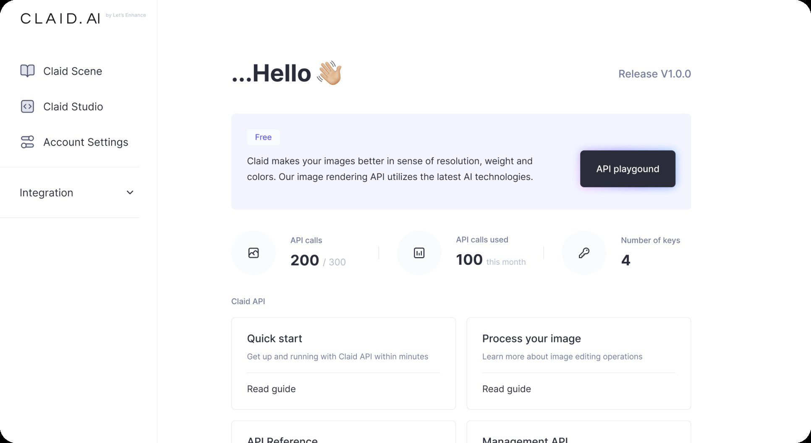
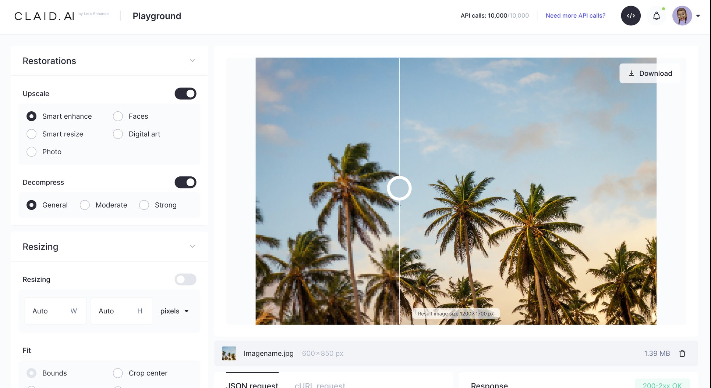
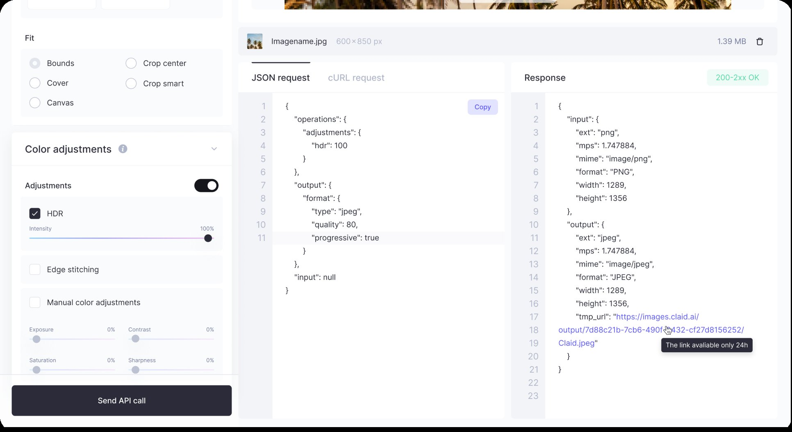
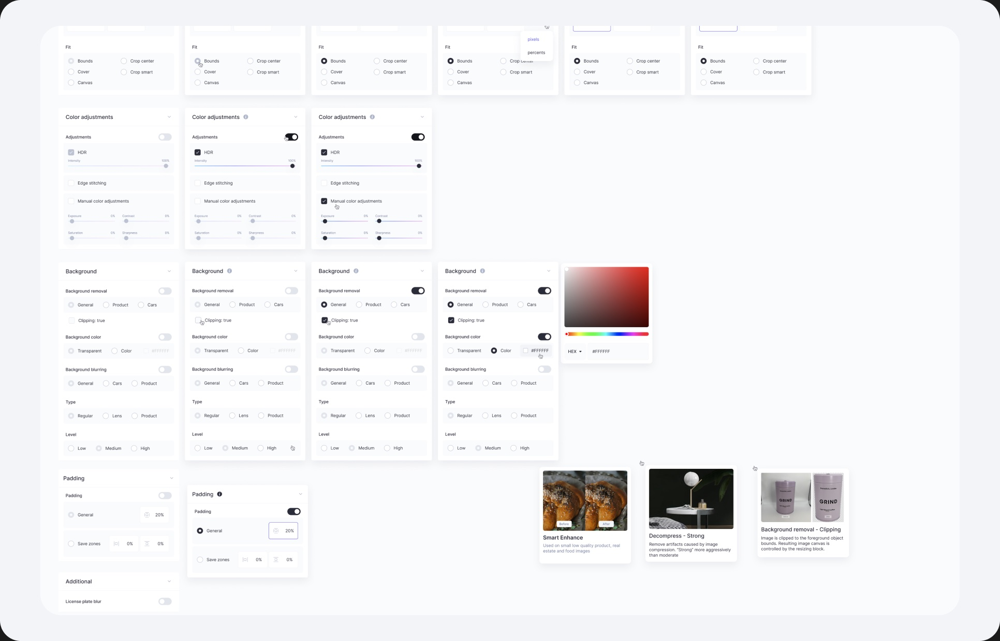
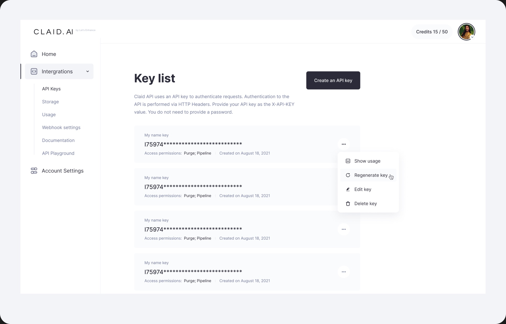
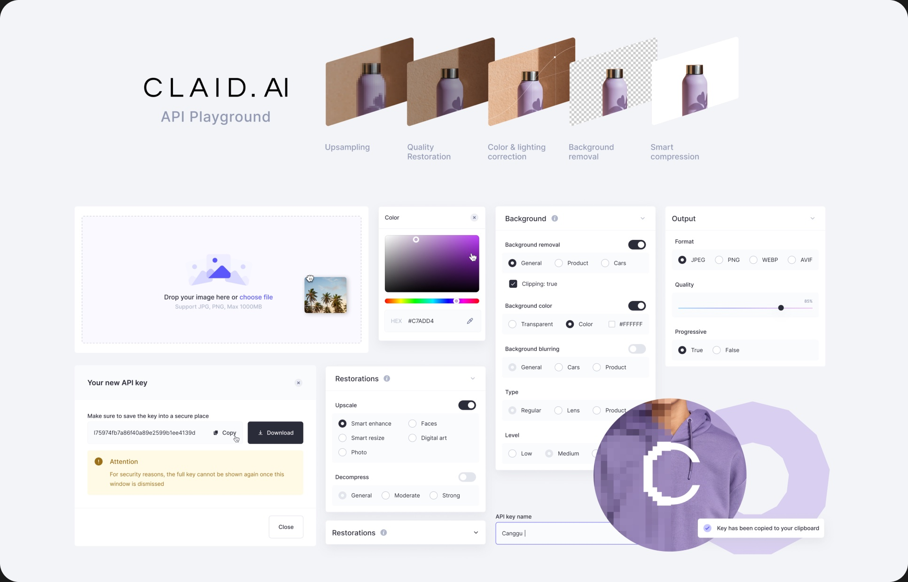

Turning powerful image APIs into an experience people can explore.
- Scope
- UX · UI · Interaction Design · Product Design
- Position
- Product Designer
At Claid, I worked across the UX and UI of a series of new AI-powered image features, helping translate complex image-processing capabilities into clear and approachable product experiences.
One of the key projects was the Q3 2022 release, which introduced the API Playground alongside new image-processing capabilities and improvements across the platform.



The API Playground was designed specifically for developers and potential API customers who wanted to explore Claid’s capabilities before integrating the API themselves.
The challenge was that someone could be interested in buying the API without necessarily knowing how to set it up locally or where to start. We needed to give them a way to understand what the API could do, experiment with real operations, and see what an integration would actually look like — without setting up a development environment first.
I designed the Playground as a hands-on exploration space where users could:
- Browse and discover the available image-processing operations
- Configure an operation and test it on their own image
- See the resulting image immediately
- Understand the API request generated from their configuration
- Explore the underlying JSON structure
- Copy the request and use it directly in their own development environment
This created a bridge between exploring the product and actually integrating the API.
Instead of asking users to read documentation and imagine how an API call would work, the Playground let them experience the workflow first and then take the generated request with them.

Designing for different levels of technical knowledge
The experience needed to work for people who were technically confident as well as those who were just starting to explore the API.
I focused on making the visual configuration easy to understand while keeping the underlying technical details visible and accessible. Users could start with simple controls, experiment with different operations, and progressively move towards the JSON and API request they would eventually use in their own integration.
Beyond the Playground
Alongside the API Playground, I designed UX and UI for a broader set of Q3 features, including background removal, upscaling, smart backgrounds, output controls, compression, decompression, and batch processing.
Although each feature had different technical requirements, I worked to make them feel like part of one coherent product experience — using consistent patterns for configuration, feedback, processing states, results, and error handling.

